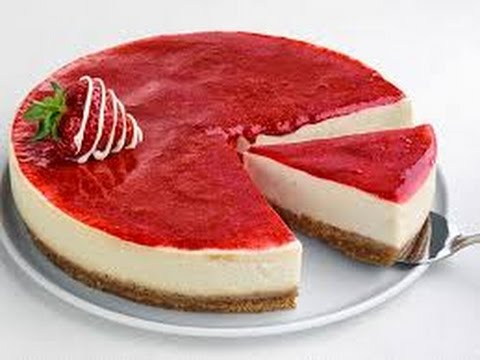
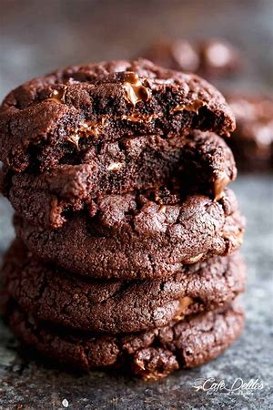

MY KITCHEN
I choose to talk about the kitchen because its very interesting and i like cooking at home sometimes ,I mosstly cook sweets thats way
I choose the cheese cake and brownie cookies and i hope you learned a bit of what I showed
Cheesecake
An image as a link:

Cheesecake Road
- 180 grams plain cookies
- 90 grams melted yogurt
- 600 grams of cream cheese
- 180 grams of sugar
- 300 grams of sour cream
- 200 grams of liquid whisking
- 3 eggs
- 3 tablespoons starch
- 1 tablespoon of vanilla
- half a teaspoon of lemon juice
TO make strawberry sauce
- 200 grams of strwberry
- 400 grams of sugar
- Tablespoon of water
Blank in the oven, hewted to 180 degrees celsius foe 30 minutes
Than save the oven temperature for 150 degrees celsius foe 40 minutes
than take it out and put it outside a little to cool than put i in the refrigerator
brownies cookies
An image as a link:

- 110 grams dark chocolate
- 30 grams unsalted
- 1 egg
- 45 grams all purpose flour
- 55 grams brown sugar
- 1 gram baking soda
- 1 gram baking powder
- half tsp esspersso powder
- 1 tbs of cocoa powder
put in the oven for 10 minutes